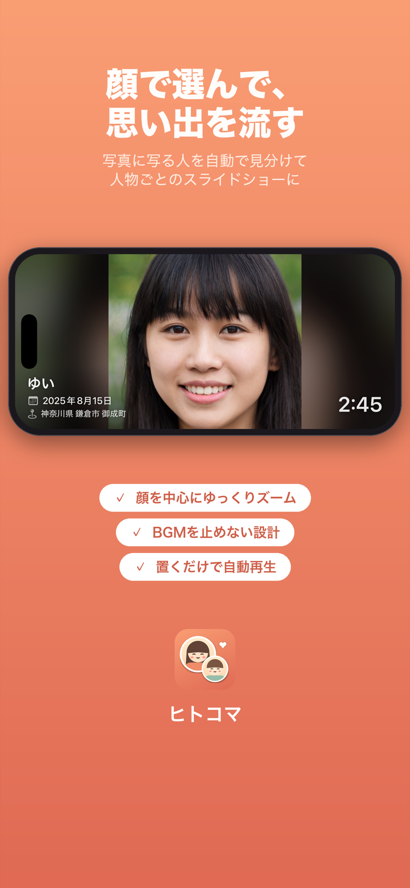
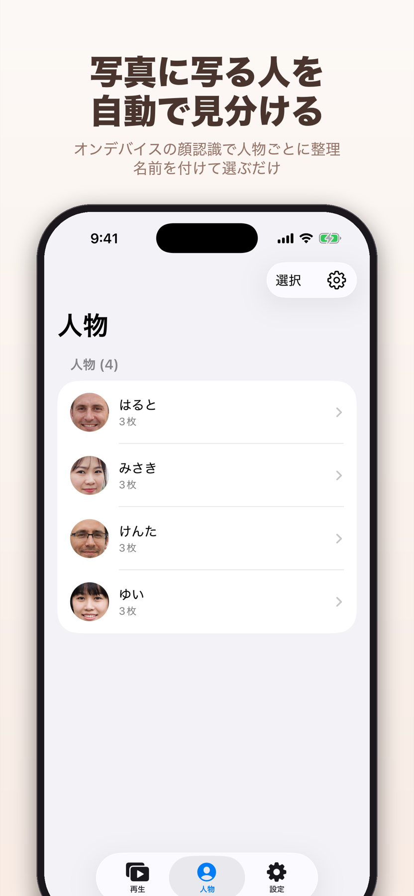
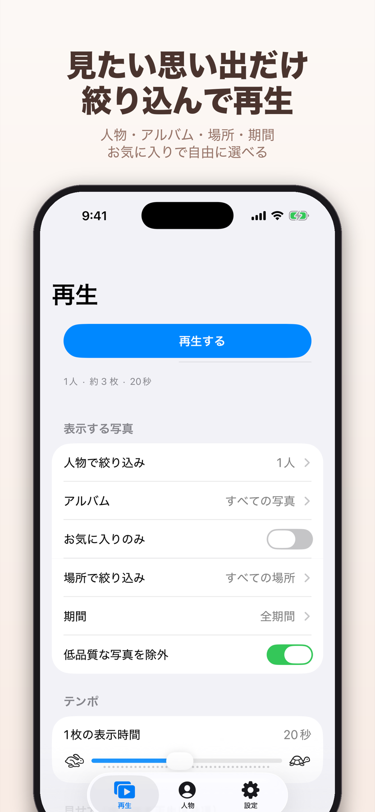

人で選ぶ
写真に写る顔を端末内で見分け、人物ごとに整理。「この子だけ」「家族全員」など、見たい人を選べます。
顔認識フォトスライドショー
ヒトコマは、写真に写る「人」を選んで流せるフォトフレームアプリ。子どもだけ、家族みんなだけ。増え続ける思い出を、探す時間なしでゆっくり眺められます。
iPhone・iPad対応
iOS / iPadOS 18.0以降

カメラロールを何度もスクロールして、見たい人の写真を探す。アルバムを作る前に、また新しい写真が増えていく。
ヒトコマなら、写真に写る人を自動で見分けて整理。今日見たい人を選ぶだけで、思い出が自然に流れ始めます。
FEATURES
写真整理を目的にせず、見返す体験を心地よくするために。顔認識から再生演出までをひとつにつなげました。
写真に写る顔を端末内で見分け、人物ごとに整理。「この子だけ」「家族全員」など、見たい人を選べます。
人物に加えて、アルバム、撮影期間、場所、お気に入りを組み合わせ、今日流したい写真だけに絞り込めます。
顔の位置を中心にゆっくり寄るズームと穏やかな切り替え。撮影日や場所、人物名も写真の上に表示できます。


PRIVATE BY DESIGN
顔の検出と人物の分類は、すべてiPhone・iPadの中で完結します。写真、顔の特徴量、登録した人物名を、開発者や外部サーバーへ送信することはありません。
プライバシーポリシーを確認する →すべて端末内で処理
EVERYDAY MOMENTS
使っていないiPhoneやiPadをフォトフレームに。再生中は画面がスリープせず、タップすると操作できます。
子どもの成長、家族旅行、遠くに住む大切な人。名前を選ぶだけで、その人との時間を振り返れます。
ショートカットとCarPlay接続を使った自動再生に対応。音楽を止めず、同乗者と写真を楽しめます。
運転者は走行中に画面を見たり操作したりしないでください。GET STARTED
直近の写真から人物のスキャンを始めます。処理は端末内で行われます。
見つかった人物に名前を付け、必要に応じて認識結果を手動で整えられます。
スキャン中でも再生できます。あとは置いたまま、思い出を眺めるだけです。
FREE DOWNLOAD
ヒトコマは無料で始められます。アカウント登録は必要ありません。
FAQ
いいえ。写真、顔の特徴量、登録した人物名は端末内だけで処理・保存し、開発者や外部サーバーへは送信しません。
アプリ本体は無料です。アプリ内に広告が表示され、広告を非表示にする買い切りオプションも用意しています。
iOS 18.0以降のiPhoneと、iPadOS 18.0以降のiPadに対応しています。Android版はありません。
人物識別の精度には限界があります。人物画面から、名前の登録、別の人物への移動、同じ人物の統合などを手動で行えます。
写真の枚数や端末によって数分以上かかる場合があります。直近の写真から始め、スキャン中でもスライドショーを再生できます。
はい。ヒトコマのスライドショーは、ほかのアプリで再生している音楽を止めずに楽しめます。